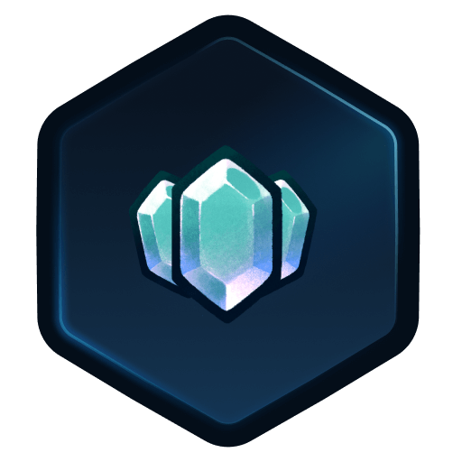

A4 · Blend — run screens 2
12-pact · after the Act 1 Boss, pick 1 of 3 · 1920×1080
3D VIEWPORT: Boss arena after the win (scrim on top)
Boss down · make a Pact
Each Pact is a strong buff with a drawback. It lasts the whole run.
PACT ART · {{ p.n }}
{{ p.n }}{{ p.r }}
Gain{{ p.up }}
Drawback{{ p.down }}
{{ pactBtn }}
Groups: title · 3 Pact cards · Accept (3). No Skip: a Pact is required. Gain and Drawback sit in separate green-1 / red-1 boxes, label text in green-6 / red-4, so the cost is never missed. Card holds the longest text (Patient Fang, 178 chars). Focus: cards ←→ → Accept. Esc: in-run menu.
13-treasure · chest opened, relic + Shards · 1920×1080
3D VIEWPORT: chest opens in the clearing
CHEST 3D · open
RELIC ART
Scent of BloodRare
Enemies below half HP take 4 more damage from every attack.

+60Shards · 240 totalTake and continue
Groups: chest · relic · Shards · action (4). No choice here, so one card and one button. Scavenger's Eye adds a second relic card beside the first (2 × 640 px). Focus: Take and continue. Esc: in-run menu.
14-in-run-menu · over Combat · 1920×1080
COMBAT (paused, scrim on top)
PausedNormal · A3 · Act 1 · Floor 4 · Turn 2
{{ panelTitle }}
{{ r.l }}{{ r.v }}
Groups: menu · side panel (2). The side panel shows the hovered or picked row: Relics owned, Run map, Settings. Resume is the primary (cream outline when focused); Abandon run is red-4 text and opens the dialog below. Focus: Resume → rows ↑↓. Esc: Resume.
15-dialog · abandon run (destructive confirm) · 1920×1080
Abandon this run?The run ends as a loss at Floor 4. You keep 60 Shards and 80 Pass XP. This can't be undone.
Groups: text · actions (2). Default focus is Keep playing, so Enter never abandons by accident. Red button only for destructive actions; the same dialog shell is used for Quit game and Reset settings. Esc: Keep playing.